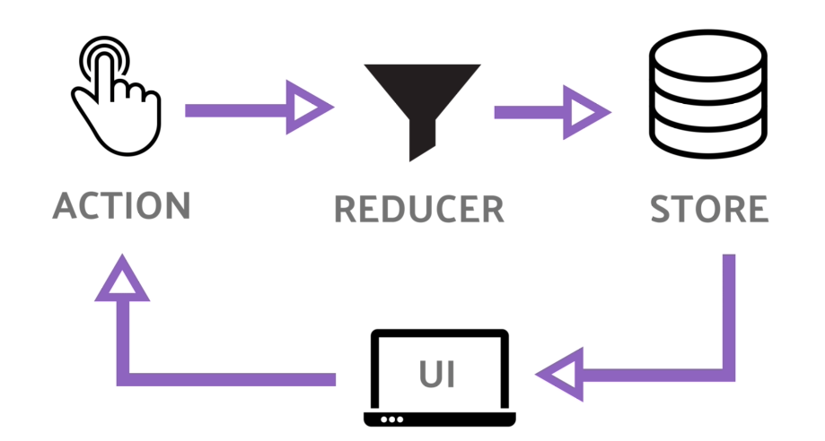

by Maxim Rurenko
Redux is a valuable tool for organizing your state, but you should also consider whether it's appropriate for your situation. Don't use Redux just because someone said you should - take some time to understand the potential benefits and tradeoffs of using it. Every tool comes with it's overhead.
Single object of your app that hold all your shared state.

Actions are payloads of information that send data from your
application to your store. They are the only source of information for
the store.
Functions that returns you an object with type and payload
are action creators
const action = {
type: 'ADD_POKEMON',
payload: { id: '009' },
};
function addPokemon(id) {
return {
type: 'ADD_POKEMON',
payload: { id },
};
}
Functions that gets current state and returns new state.
Reducers specify how the application's state changes in response to actions sent to the store. Remember that actions only describe what happened, but don't describe how the application's state changes.
Redux can be described in three fundamental principles